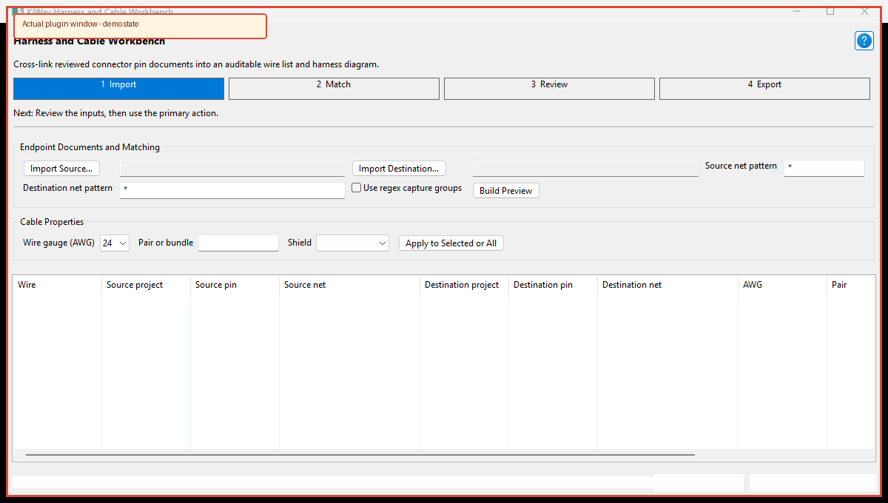

* wildcards, or enable regex and provide a capture group.Source DEMO_CTRL_* and destination DEMO_IO_* link records by the captured suffix.
Automatic name matching does not establish electrical compatibility. Verify pin type, voltage, current, gauge, shielding, twist, insulation, connector rating, and mating orientation.